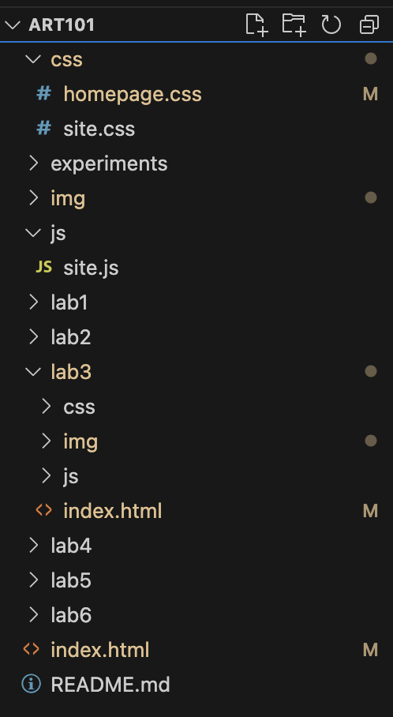
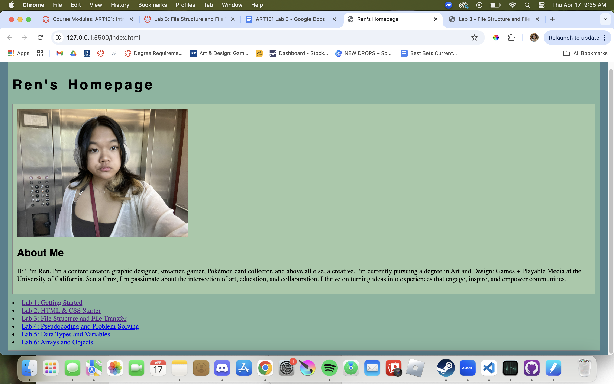
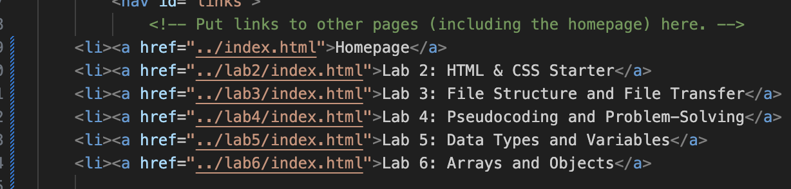

Lab 3 - File Structure and File Transfer
Challenge
The objective of this assignment is to understand file structure by adding a portait of myself to the homepage of my GitHub website and adding the links to all of the labs.
Problems
At first, my selfie wouldn't show up in my file structure, even though I was putting it in a folder called ART 101. It turned out that I was putting it in the wrong folder, as the directory where this website is located is called art101, not ART 101.
Reflection
In this assignment, my lab partner and I worked mostly separately since this was more of a personal assignment where we had different images to add and different blurbs to associate ourselves with. It went mostly smoothly, but I was a little behind because I had my selfie.jpg in the wrong folder at first.
Results
Here is the file structure in my art 101 directory:
This is what my homepage looks like:
This is what my linked files look like, in the index.html file:
